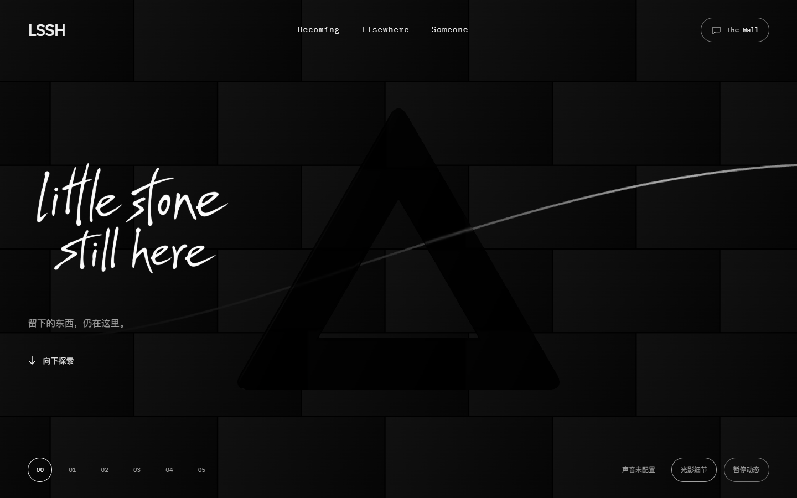
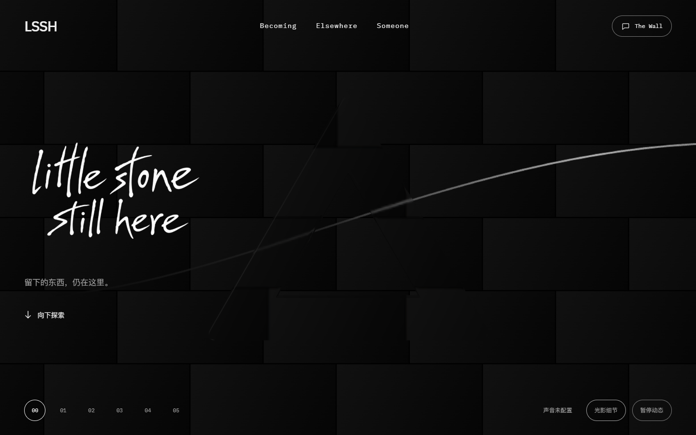
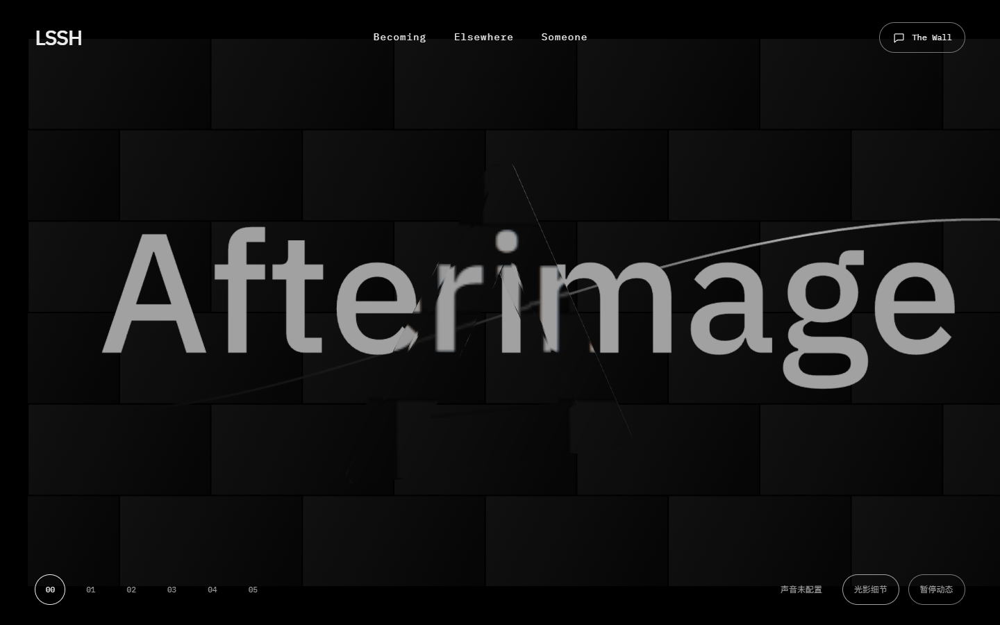
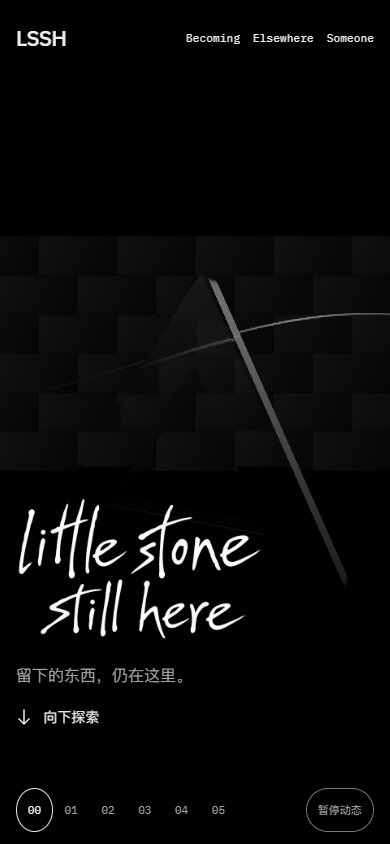

LITTLE STONE STILL HERE / P01 · T03.05
第 28 轮只将现有玻璃 ShaderMaterial 设为 toneMapped:false。线性透射合成保留输出色彩转换，全局 ACES 与曝光保持原值。以下是两份实际构建的原始截图；固定视角用于隔离颜色输出，手机样本采用正常姿态与时钟。



面内样本是原图指定矩形区域的平均 RGB（0–255）。玻璃外控制区排除玻璃包围盒及 2px 余量；两张图的非 HTML 资源、相机、实际进度和姿态均一致。未编辑或重采样原图。
| 固定视角 | 上部灰度：前 → 后 | 下部灰度：前 → 后 | 玻璃外像素 | 变化像素 |
|---|---|---|---|---|
| 顶部正面 | 2 → 14.476 | 0.999 → 10.359 | 994,796 | 0 |
| 550px / Y35° | 2 → 14.107 | 1.323 → 12.091 | 1,090,208 | 0 |

5 个页面样本无脚本错误或请求失败，WebGL error 为 0。材质运行时开关与编译的 TONE_MAPPING 定义对应；全局 ACES、曝光、环境来源、原反射权重及输出转换保留。宽面高光与最终玻璃美术尚未验收。
Chrome 154.0.8037.98 / SwiftShader。桌面 1440 × 900 / DPR1。软件 GPU 与手机模拟不证明真实手机帧率、触摸或不同刷新率表现。
前：HomeJourney.CXa-QBcJ.js70eeb2f833de8ed4821589a75606e6193adcf4fc713aa3c0dce18ea9d988248a
后：HomeJourney.CJZaUZI8.js446cfd6609062fec6cf85f8da878d8a36680b62d02244d58ba746b8a67396e3e